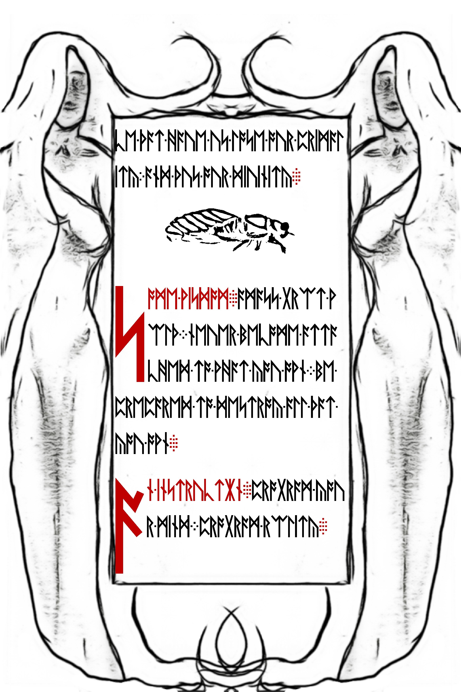
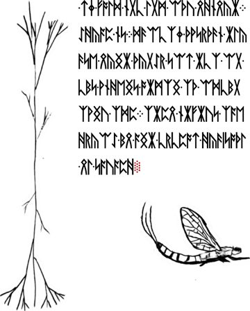
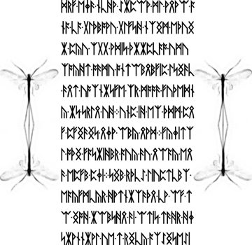
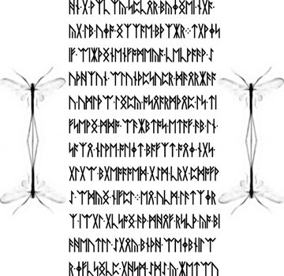
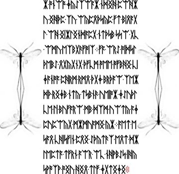
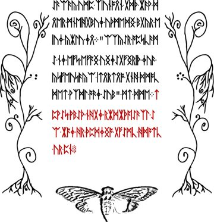
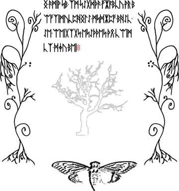
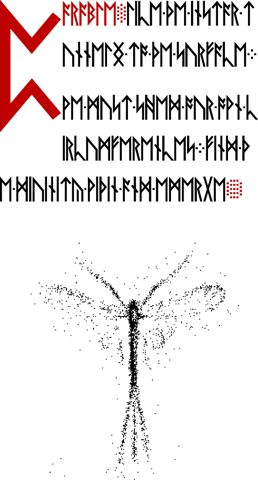

Insects and wing imagery
Compare the opening-page insect, the LP2-14 profile, the Mayfly group, later winged figures, and the stippled drawing beneath the parable.
On this page
Insect imagery appears in several different forms across both manuscript releases. A profile drawing, opposed figures, a detached wing, and the stippled figure beneath the final parable offer different visual evidence. This guide brings selected examples together so they can be compared without assuming that they depict the same animal.
The insect between passages on LP1-13
The small insect on LP1-13 faces right, with a dark head and a striped wing extending left over its body. It sits below the last two rows of the preceding argument and above the red opening of the Some Wisdom passage. The hooded figures around the page form a separate surrounding decoration.

[820, 1050, 750, 300]. Full page · Original JPEG.Its orientation and wing markings invite comparison with LP2-02 below. Those similarities do not establish a shared source image or biological species. Keep the two page records separate when recording a proposed match.
The insect below LP2-02
The opening group ends with a winged insect-like figure beneath the text on LP2-02. Its head faces right. A rounded eye and projecting appendages appear at that end; a large wing with dark internal stripes extends left. The page’s cross-like margin drawings remain separate from the figure.
[850, 2600, 750, 380]. No sharpening or thresholding is applied. See the complete page · Download original JPEG.Compare its orientation and wing markings with the LP2-14 profile below. These descriptions make the two drawings easier to locate; they do not identify either as the source of the other or establish a species. The opening-page artwork comparison places the figure beside the loops and margin drawings on LP2-00–02.
The profile drawing on LP2-14
Below the text at the right of LP2-14 is a sideways insect drawing. The body is segmented, a veined wing rises above it, and long curved appendages extend from its rear. The narrow branching drawing continues down the opposite margin. This combination makes the page recognizable even without reading its runes.

The “Mayfly” group: LP2-23–26
The community groups LP2-23–26 under “Mayfly.” LP2-23 opens with five large dots above the text. On LP2-24–26, elongated insect-like figures flank the text on both sides. Their upper and lower parts oppose one another, which makes orientation a useful feature to record before comparing the drawings.




The browsing name does not prove a species identification. Nor does it mean that a complete insect drawing appears on every page in the named group. The dot inventory separately records the LP2-23 arrangement.
Winged figures on later pages
LP2-53 and LP2-55 show dark winged figures beneath their text, within the surrounding curled borders. LP2-55 also has a pale tree-shaped drawing above its insect. On LP2-57, the figure is built from a dense vertical body and scattered marks extending into wing-like areas. Its rendering differs visibly from the outlined and shaded figures on pages 53 and 55.



A resemblance between two figures is a starting point for comparison. To claim that they reuse one source, compare corresponding contours, internal details, and proportions after stating any scaling or reflection. Repeated subject matter alone is insufficient.
The detached wing
LP2-27 places a long, veined wing above the red opening text. It is useful to inspect that wing separately from the whole-insect drawings. The Wing and Tree guide follows the LP2-27–32 group from this image to the tree-shaped drawing on its last page.
Connecting the images with the text
The known Welcome and final parable use the word instar. An instar is a stage between molts, not the name of a species. The parable’s language of tunneling, shedding, and emergence makes an insect comparison relevant, but it does not identify every drawing in the book as a cicada.
This distinction leaves room for close reading. Ask which visual features accompany a readable passage, then ask how the passage uses its biological analogy. On unsolved pages, there is no established reading to supply that same context.
Mayfly and cicada: compare features, not just names
The community name “Mayfly” and the puzzle’s name “Cicada” should not be used interchangeably as identifications. The University of Kentucky’s mayfly guide and Purdue Entomology’s cicada account provide useful biological comparisons:
| Feature | Mayflies | Cicadas |
|---|---|---|
| Immature habitat | Aquatic young, often called naiads. | Nymphs develop underground. |
| Visible adult features | Two or three long tail filaments; forewings much larger than the hindwings, which may be absent. | A relatively stout body and largely transparent wings extending beyond it. |
| Transition to the adult | A winged intermediate stage, the subimago, molts again before sexual maturity. | The emerging nymph climbs a support and sheds its nymphal covering. |
Subimago names that intermediate winged mayfly stage. It is not another word for the discarded shell or for every insect’s immature stage. Compare instar, ecdysis and exuvia before applying one of these terms to a drawing.
For a manuscript comparison, record which features you can actually see. Long rear appendages may make a mayfly comparison worth investigating, but an artist’s line is not automatically an anatomical structure. A hidden or omitted hindwing cannot be counted as proof that the animal lacked it. Body proportions can also be changed by perspective or stylization. The habitat of an animal cannot be read from an isolated outline unless the image supplies environmental evidence.
This comparison explains what to look for; it does not identify a species, a source illustration, or the intended meaning of the manuscript. Likewise, the word instar in a readable passage does not tell us which insect is pictured beside it. The two university references were checked on 20 October 2026; their biological descriptions are background, not evidence of a historical connection to the puzzle authors.
What a defensible identification needs
| Evidence to retain | Why it matters |
|---|---|
| The original page and an unmodified region | Shows which features are actually present, including faint lines and cropping |
| A named comparison source | Lets another reader inspect the proposed illustration or anatomical reference |
| Matching and nonmatching details | Prevents a general silhouette from outweighing contradictory features |
| Orientation and transformations | Explains any rotation, reflection, stretching, or contrast changes used in the comparison |
For an artwork-source attribution, a matching historical illustration is stronger evidence than a broad biological resemblance. For a species claim, diagnostic anatomy matters more than the puzzle’s name. Neither kind of identification automatically determines a cipher operation.
Sources and scope
Observations refer to the preserved JPEGs linked through the page records. Those records provide original files, SHA-256 hashes, and pinned public archive sources. Group names follow the Cicada Solvers LP2 index; they are community browsing labels, not decrypted chapter headings. Previews are cropped: open the reader to inspect complete pages.
This is a selected visual inventory, not an exhaustive survey of every insect depiction in Cicada 3301’s puzzles.
Manuscript pages discussed
LP1-13 · LP2-02 · LP2-14 · LP2-23 · LP2-24 · LP2-25 · LP2-26 · LP2-27 · LP2-53 · LP2-55 · LP2-57